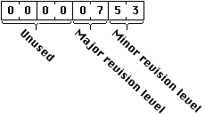
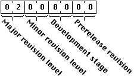

Legacy Document
Important: This document is part of the Legacy section of the ADC Reference Library. This information should not be used for new development.
Current information on this Reference Library topic can be found here:
ADC Home > Reference Library > Technical Notes > Legacy Documents > Mac OS 9 & Earlier >
Important: This document is part of the Legacy section of the ADC Reference Library. This information should not be used for new development.
Current information on this Reference Library topic can be found here:
|
System 7.5 Update 2.0 and System 7.5.3Two ImplementationsBeginning in the second quarter of 1996, new Mac OS computers will ship with a version of system software 7.5.3 that is specifically configured for the machine on which it is pre-installed. For customers who are currently using system software 7.5, 7.5.1 or 7.5.2, the only way to update to system software 7.5.3 is to install System 7.5 Update 2.0. This Spring Apple will also release an updated version of the retail Macintosh System 7.5 Upgrade package that includes a single installer and full disk set of system software 7.5.3 in support of all computers from the Macintosh Plus to the current PCI-based Power Macintosh computers. Those machines shipping with System 7.5.3 pre-installed may not have all the bug fixes of System 7.5 Update 2.0. The differences are listed in the section Features Present in Update 2.0. If System Software 7.5.3 is Present...When 7.5.3 is installed, the About This Macintosh... window displays the version number "System 7.5.3". If 7.5.3 was installed using the update package, a second line below the version number will be displayed indicating the system update version number. For system update 2.0, the line "System 7.5 Update 2.0" will be displayed. If System Software 7.5.3 is present, then the Gestalt selector gestaltSystemVersion ('sysv') will return a version number of 0x00000753 in the response parameter as illustrated in Figure 1. Figure 1 Format of the Gestalt response for the 'sysv' selector. As discussed in the previous section, there are two different versions of the System 7.5.3 software--one version that comes installed on a new machine, and another version established by applying Update 2.0 to a machine configured with System 7.5, 7.5.1, or 7.5.2. To distinguish between these two versions of the system software, the 'sysu' Gestalt selector has been provided. It will return the version number of the currently installed system update. The version number returned is formatted according to the same conventions as the version numbering used in 'vers' resources, as illustrated in Figure 2. Figure 2 Format of the Gestalt response for the 'sysu' selector. The presence of the 'sysu' Gestalt selector allows application programs to determine if the current installed system software version was established using the system update. The 'sysu' Gestalt selector will only be defined if a system update package was used to establish the current system version--the 'sysu' selector is not defined on machines shipped with System 7.5.3 installed. For example, here is how you can use the 'sysv' and the 'sysu' Gestalt selectors to establish information about System 7.5.3:
Features Present in Update 2.0The following list describes features present in System 7.5 Update 2.0. Developers can use the 'sysu' Gestalt selector, as described in the previous section, to determine if these features are present.
See Also:
New Features and ChangesAs the improvements offered by this update are numerous and difficult to classify into discrete categories, the changes have been listed under headings that apply to the different system software components, sorted alphabetically. Alias ManagerEnhancementsThe Alias Manager now takes advantage of new user interface features in the AppleShare Workstation Client Software to decide if it should call through to the AppleShare Workstation when resolving a network alias. The Alias Manager has been unified into one common source code base for all Mac OS-based computer platforms. Previously, there were three different variants of the Alias Manager that may have been installed: the basic version, the PowerTalk version, and the ARA version. Now, the facilities offered by each of these have been unified into one common implementation, guaranteeing consistent Alias Manager behavior across all of the Mac OS platform. Support has been added to enhance the Alias Manager's user interface in the dialogs presented when attempting to mount a remote AppleShare server using an alias. The Alias Manager dialogs now allow for user authentication within these dialogs, improving the convenience of this facility. Bug FixesSeveral errors have been corrected with this release of the Alias Manager. The most prominent of these errors, involving the inability of the Alias Manager to resolve aliases to files on a CD-ROM, was already repaired in a patch installed with the QuickTime software; it has now been fixed directly in the Alias Manager code. Apple GuideThe Apple Guide software contains a number of changes that improve its overall performance on both 68K and PowerPC-based computer platforms. Some of the changes and extensions to the Apple Guide software that are of interest to developers are listed here. EnhancementsA new Gestalt selector for the Apple Guide software has been added. The new selector, 'ag_v', returns the version number of the currently installed Apple Guide Software, using the formatting conventions described in Inside Macintosh: Operating System Utilities (1-10). Apple Guide now allows more than 8 mixin files to be open at one time. The limit to the number of guide files that may be open simultaneously is determined by available memory. Apple Guide is now fully native. Option-click on a Guide Sequence panel copies the contents of the panel to the Clipboard. Apple Guide now plays sounds asynchronously. Bug FixesA random crash when accessing the Apple Guide API from native applications was fixed. Difficulties displaying coach marks in modal dialogs have been eliminated. A memory leak in Apple Guide's heap occurring whenever a new data base was opened has been stopped. A problem where every 21st index item would erroneously disappear under certain circumstances has been corrected. Most commonly this error would appear when multiple mixin files were in use. Apple Guide 2.0 defaults to US ASCII sorting only if the current script is Roman and the current language is English. International resources are now handled correctly.
Apple Menu OptionsApple Menu Options (AMO 1.1.1) has been rewritten to include the following performance enhancements, extensions, and bug fixes: EnhancementsInternational sorting capability has been added. AMO's GetResource patch is now only installed when the Apple menu is selected and drawn on the screen. This eliminates any possible conflicts with the Toolbox call GetResource while other applications are running, and reduces the call overhead for GetResource while the Apple Menu is not being held down. AMO was originally written as a modular INIT making extensive use of calls and patches routed through its own private jump tables. Architectural changes in AMO moving away from this model have both reduced AMO's memory footprint and improved performance by reducing AMO's processing requirements. Bug FixesAMO was generating an incorrectly sized 'sysz' resource, sometimes causing out-of-memory errors at system startup. This particular bug manifested itself through incorrectly drawing menus for applications that failed to call MaxApplZone() during their startup sequence. A problem where submenus were not being drawn or drawn too large under certain conditions was fixed. Apple PhotoCD AccessEnhancementsIt is now possible to display more than 30 sessions on a Kodak PhotoCD disc. AppleShare Workstation Client SoftwareEnhancementsApplications accessing files through the AppleShare Workstation Client Software can now take advantage of the performance improvments offered by read-ahead and write-behind caching. For example, in the Finder, files are automatically buffered by the AppleShare Workstation Client Software, having the overall effect of allowing the Finder to simultaneously write to a local volume while reading from a remote volume, and vice versa. The parallelism offered by this enhancement greatly increases the performance of file copies since useful work is being done while waiting for I/O operations to complete on either the local or the remote volume. No programatic changes are required to take advantage of this enhancement. The new version also briefly caches some information from the desktop database for selected AFP requests such as GetForkParms and GetFileDirParms to avoid unnecessary disk access. In this case, the cache is small and is flushed often to avoid stale information. Communications ToolboxBug FixesA crash that would occur in the Communications Toolbox NuLookup and NuPLookup routines if there were more than 600 zones on a single network has been corrected by adding a new LDEF that references the zone names through pointers, rather than attempting to store the names directly in the Listhandle. The new limit is just over 8000 zones. Control ManagerBug FixesA problem in the scrollbar CDEF causing a garbage pattern to be drawn in the pageUp and pageDown areas has been corrected. The scrollbar CDEF was using an unlocked dereferenced handle after making a system call not guaranteed not to move memory. Dialog ManagerBug FixesA problem where the filter procedure returned by GetStdFilterProc(...) was trashing register D3 has been corrected. This problem appears in System Software 7.1 and later. Digital Signature Facilities (DigiSign)EnhancementsThe digital signature component of the Apple Open Collaborative Environment (AOCE) has been built into a system extension that may be installed separately on any machine running System 7.5 or greater. This may be done by using the Custom Install option for the PowerTalk software. Applications wishing to access the facilities offered by the Digital Signature Manager may test for its availability with Gestalt using the gestaltDigitalSignatureVersion ('dsig') selector. When present, all of the previously documented facilities of the Digital Signature Manager will be available. The Digital Signature facility also has been updated to accommodate the order in which resource types are returned by the new native Resource Manager routine Get1IndType when calculating digital signatures for files containing multiple resource types. The new Digital Signature Manager will compensate for signatures created using the older resource ordering, correctly verifying signatures created on machines running with the 68K-based Resource Manager.
See Also:
Display ManagerEnhancementsDisplay Manager 2.0 is installed on all color computers, and supports calls to query display capabilities (DMNewDisplayModeList, DMGetIndexedDisplayModeFromList and DMDisposeList). The Display Manager 2.0 power state calls (DMGetAVPowerState and DMSetAVPowerState) control power states for displays without using direct calls to video drivers. The routine DMSaveScreenPrefs saves the current display configuration to disk. Display Manager callbacks registered with a process serial number are made within the application's context (A5, patches, resource file chains, etc.). Bug FixesA small memory leak sometimes occurring during window resizing has been corrected. See Also:
DMA Serial Driver (SerialDMA)Enhancements & Bug FixesThe new DMA Serial Driver corrects every reported DMA Serial Driver problem to date and represents a complete rewrite of the drivers controlling the modem and printer ports on the following computer models:
The new serial drivers are also used in the newer PCI Power Macintoshes including the 7200, the 7500, the 8500, and the 9500 series, and probably others in the future. Other machines that support the new DMA Serial Driver include Performa models and Apple Workgroup Server models derived from the machines listed above.
The new DMA Serial Driver is included in the System 7.5.3 System Enabler and as a result the SerialDMA system extension should not be used on machines configured with System Software 7.5.3. The SerialDMA system extension was made available early to allow users to upgrade the serial driver software on computers running System 7.5 or greater and has since been built into the system software. SerialDMA has been implemented in native code for PowerPC-based machines. The new serial driver will return a version number of 9 for the version query Status call (csCode = 9). Applications wishing to take advantage of the new features offered by the SerialDMA 2.0 driver should check for this version number. Application developers wishing to take advantage of new features offered by the SerialDMA 2.0 driver should refer to Technote 1018 - "Understanding the DMA Serial Driver."
The device driver interface for the SerialDMA driver now provides for data transmission rates of 115.2k bps and 230.5k bps set through two new control calls: - Enable 115.2K baud rate (csCode = 115). - Enable 230.4K baud rate (csCode = 230). Other configuration parameters such as bits per character, parity, and stop bits are configured by calling SerReset prior to calling the above control calls. See Technote 1018 - "Understanding the DMA Serial Driver" for details. Applications wishing to utilize these calls should take special care to use the serial driver efficiently; not doing so will cause serious performance degradation. A good discussion of strategies for efficient use of the serial driver can be found in Technote 1018 - "Understanding the DMA Serial Driver". Another Control call introduced with this version of the serial driver provides facilities for external clocking. This routine was designed to help support MIDI externally clocked data rates and is described in Technote 1018 - "Understanding the DMA Serial Driver."
Bug FixesSome of the more prominent bug fixes present in this new implementation of the DMA Serial Driver include: The SerialDMA driver behaves correctly with interrupt-based chained read algorithms (completion routines that call Read, that have completion routines that call Read, and so on). Prior to this correction developers utilizing chained read algorithms with the DMA serial driver were required to chain calls together with intervening calls to the Deferred Task Manager. Break conditions are now reported correctly. The DMA Serial Driver now responds to control call 16 (bit 7) correctly, allowing DTR to remain negated when the driver is closed. Formerly, it was possible for DTR to become asserted when closing the driver, even when the client software requested otherwise by setting bit 7 to 1 in control call 16. These bugs were not inherent in the original 68K serial driver, but were problematic in the first generation DMA Serial Driver. For a more complete listing of bug fixes present in the new DMA Serial Driver, refer to Technote 1018 - "Understanding the DMA Serial Driver." KillIO now works correctly, resetting the appropriate internal structures for the serial drivers. Under the 68K serial driver, calling KillIO for one driver (either in or out) would reset internal variables for both drivers, possibly leaving some requests pending in the other driver's queue. For earlier versions of the serial driver, always call KillIO for both the input and the output driver when using simultaneous queued requests. See Also:
Dynamic Recompilation (DR) EmulatorSystem 7.5.3 software includes an updated version of the Dynamic Recompilation Emulator that will replace the 68K DR emulator software installed on the following Macintosh models:
The new DR emulator offers improved performance in 68K applications running on the above PowerPC machines by precompiling a greater variety of 68K instructions into a larger executable cache before it is executed. In addition to the increased DR cache size (from 256K to 512K), the DR emulator now does better optimization in the precompiled code it generates. This, along with other finely tuned performance enhancements, allows for improved execution speed of 68K applications running on the above hardware platforms.
See Also:
File SystemBug FixesA problem introduced with 7.5 update 1.0 preventing 2-byte characters from being used when naming DOS disks has been fixed. The File System Manager now correctly restores an application's HiHeapMark after an asynchronous cache call. PCI/PowerPC-based computer systems can now mount volumes larger than 4GB. Finder ChangesEnhancementsThe System 7.5.3 Finder has been significantly revised correcting problems and providing numerous performance enhancements. The following list summarizes the changes present in the new Finder. There now exists greater than 4GB support on new PCI/PowerPC-based computer systems. The Finder now checks in an application's resource fork for a FREF entry of type 'alis'. If such an entry exists, alias files are not resolved before they are passed to the application. File comment information, displayed in Get Info windows, is retained across desktop file rebuilds. On PowerPC computers, the Finder will use the translucent Drag Manager when dragging icons. Only one icon will appear translucent during a drag, even if more than one icon is selected. Interfaces and documentation are available for developers interested in incorporating translucent dragging into their applications. For more information, refer to the section Translucent Dragging of PixMaps, in this Technote. The Name field used in Finder windows, displayed using the View by Name, View by Size, View by Kind, or View by Date options, is now wider, allowing for the longer file names to be visible when these options are selected. For better performance, the processor cache is now flushed more intelligently on both 68040 machines and PowerPC machines. The Copy Progress window is not updated as often during File Copy operations. This change provides better performance when large numbers of small files are copied, since the machine now spends less time drawing the progress bar than copying files. Previously, the Copy Progress window was updated as often as 30 times per second. The Finder Update file has been built into the Finder and will no longer be present once system 7.5.3 has been installed. The Clean Up Window command in the Special menu is no longer available while the clipboard window is active and frontmost. Previously, choosing this command while the clipboard was active would cause a crash. If the users password has expired or needs to be changed, more meaningful error messages are displayed when attempting to use an alias to mount a server. Previous versions of the Finder simply reported that the server could not be found under these conditions. The new Finder uses a default letter reader application for opening Powertalk mail messages if one has been specified. Under previous versions of Powertalk, if a user attempted to open a letter the creator type from the SMPLetterInfo structure was used to determine what application should be used to open the letter. This behavior is still provided, but the Finder will first check for a default letter reader application. If a default letter reader application has been defined, then that will be used to open the letter, rather than the application specified by the creator type in the SMPLetterInfo record. Bug FixesThe Finder Scripting Extension didn't understand the AppleScript "is in" keyword. For example, the whose clause "every item of ... whose name is in ..." did not work. The Compare procedure always assumed that the first parameter was an object, and the second was either an object or literal data. The "is in" keyword passed the literal data in the first parameter and the object in the second parameter, substituting "contains" as the comparison operator (since there is no "is in" comparison operator). The fix allows the Compare procedure to compare literal data with an object. Out-of-memory errors caused by emptying the trash on machines where QuickDraw GX is installed have been corrected. Seemingly erroneous out-of-memory errors reported when attempting to open and close Finder windows should no longer occur. Users may have noticed this problem when the desktop contained few icons, a window with the Kind column was visible, and a large number of different kinds of documents had been displayed since the last restart. The Find window will now be correctly be brought to the front if Find File is already running in the background when the Find command is chosen. Fixed Point MathEnhancementsThe performance of fixed-point routines have been improved with a new native implementation, taking advantage of the PowerPC FPU. Special attention was given to the routines FixMul and FracMul, which were hand-coded in assembly language for optimal performance using the 64-bit integer multiply instructions mullw and mulhw. The new implementation translates the fixed-point parameters into floating-point numbers in most cases, performs the calculations in the floating-point domain, then translates the result back into a fixed-point number. Speed improvements over the old PowerPC implementation for the new Fixed math routines on the 601 and 604 processors are between 300% and 600% faster. Modest performance improvements have been observed in the transfer functions Fix2Frac, Fix2Long, FixRound, Long2Fix, Frac2Fix, Frac2X, and Fix2X. Developers making extensive use of the fixed-point math facilities may want to keep the following points in mind:
See Also:
Font ManagerBug FixesA problem where ResolveIDConflicts would miss a FONT/NFNT conflict in the main resource chain has been corrected. Hardware Cursor SupportEnhancementsNew support for hardware-based cursors has been incorporated into this release of the system software. Components used by the QuickTime 2.1 Image Compression Manager have been updated for compatibility with hardware cursors.
See Also:
InterfaceLib ChangesBug FixesThe get1namedresource interface glue code has been corrected to call Get1NamedResource instead of GetNamedResource. get1namedresource is a interface provision dating back to MPWC 2.0 that accepts a C-style string as the name parameter instead of a Pascal style string. get1namedresource does the necessary C-to-Pascal string coercion before calling Get1NamedResource. MathLib ChangesSystem 7.5.3 includes MathLib version 2.0.3. Bug FixesThis updated version of MathLib corrects a problem could inadvertently alter the rounding direction when the rarely called nextafterd library function was called. An inaccuracy in the complementary error function erfc in the range [-0.46875,0.0] has been corrected. Memory ManagerEnhancementsFor improved performance in emulated applications, the Modern Memory Manager has been compiled for both PowerPC and 68K thereby eliminating mixed mode switches in the routines HGetState, HSetState, HLock, HUnlock, HPurge, HNoPurge, HClrRBit, HSetRBit, and GetHandleSize. In the past, the Memory Manager would install bus error handlers during the processing of Memory Manager calls to catch invalid addresses passed to the Memory Manager routines. These bus error handlers have been removed and replaced with simple pointer sanity-checking, resulting in enhanced performance. This change is present on machines shipping with system 7.5.3 installed and is not present in the updated version of 7.5.3. Bug FixesA problem that could significantly slow down the launching of certain third-party applications when virtual memory was enabled has been corrected. Launch times for these applications with virtual memory enabled should now be much closer to the launch time with virtual memory disabled. The implementation of DisableDataCache on Macintosh IIsi and IIci machines was not flushing the cache during the process of disabling it, causing compatibility problems with certain third-party 68040 expansion cards. This problem has been corrected for those machines. See Also:
Menu ManagerBug FixesA problem of the menu bar defproc (MBDF) using a dereferenced handle after it has moved has been corrected. During the calculation of a menu's rectangle, when drawing either pop-up menus or sub menus, the Menu Manager was dereferencing a handle, calling a toolbox routine that could potentially move memory, and then using the dereferenced handle again. Developers encountering this error may have observed sub menus or pop up menus being drawn with incorrect boundary rectangles. CalcMenuSize was blindly locking and unlocking the MDEF. This caused a problem when the MDEF called CalcMenuSize, because the second call unlocked the MDEF as it was executing. The MDEF would then proceed to make other calls which might move memory. This meant the MDEF could be moved out from under itself, causing intermittent and apparently random crashes. The new CalcMenuSize corrects this problem by saving and later restoring the handle state (using HGetState and HSetState) before returning. The new system MDEF correctly handles the case where the menu handle is an empty handle. This correction is already present in the 68K version of the Mac OS. Monitors Control PanelThe Monitors control panel has been updated to depend on the Display Manager and will refuse to launch on machines running pre-System 7.5.3 versions of the Display Manager (it requires Display Manager version 0x00020004 or later). Additionally, the Monitors control panel has been extended to support both PCI- and NuBus-based Mac OS-based computer systems. Developers writing Monitors control panel Extensions should be aware of the following issues:
See Also:
Open TransportSystem 7.5.3 marks the general release of Open Transport 1.1. Most notably, the Open Transport Library can now be installed and used on 68030 and 68040 machines as well as all PowerPC computers. Documentation regarding Open Transport and the changes present in this release can be found in the Open Transport developer package on the System Software SDK. Changes and improvements over previous releases of Open Transport are described as follows: Enhancements
Serial Endpoints:
ATP Endpoints:
For Client Developers:
See Also:
Power Off Key DisablerEnhancementsRoutines allowing developers to control the behavior of the Power Off key have been incorporated into System Software 7.5.3. The Gestalt selector 'pwky' returns a pointer to a function that developers may call from applications to enable or disable the Power Off key. This same routine may be called to configure the Shut Down Alert for automatic dismissal. The following set of routines and constants illustrate how to access this new routine from within applications.
PowerTalkBug FixesPowerTalk 1.2.3 fixes a bug where calling SDPNewFindPanel from a native PowerPC application causes an instant crash. This call will now function correctly and as expected. PrintingThis update features several corrections to problems found in the printing software as follows. EnhancementsLaserWriter 8 (v8.3.3) now supports ColorSync 2.0 and QuickTime compressed images. Bug FixesLaserWriter 8 (v8.3.3) incorporates a new version of PAP that fixes printing problems found with System 7.5.2 and OpenTransport. It corrects two common printing problems found most often on PCI-based computers:
The StyleWriter 1200 driver version 2.1.1 fixes a crashing bug on System 7.5.2 capable computers. Process ManagerEnhancementsThe application heap size has been increased by an additional 28 kilobytes on all PowerPC-based computers. Bug FixesFour important bugs have been fixed in this release of the Process Manager. These have not been major problems encountered by users in the past, yet some developers have encountered these problems during development and their queries have been answered here. Previously, when an application that does not accept suspend/resume events was hidden (using the Hide XXX menu command), and later shown (using the Show All menu command), its frontmost window would remain active (even when that application's window was not the frontmost window). A call to MoveHHi with a handle inside a private heap zone created within the system heap zone previously would not move the handle as expected. MoveHHi now does the correct address arithmetic and operates on such handles correctly. Temporary handles allocated by an application in the Process Manager heap, using the routine TempNewHandle, were not removed correctly from the Process Manager's list of "handles to dispose when the application terminates" if the handle was empty when DisposeHandle was called. This bug affected both applications that allocated temporary handles and made them purgeable by calling HPurge (and the handle was in fact purged from memory), and applications making explicit calls to EmptyHandle before calling DisposeHandle. Because such handles would remain in the list of "handles to dispose of when the application terminates," the Process Manager would call DisposeHandle again for the handles when the application terminated, causing corruption of the Process Manager heap. This would lead to unrecoverable errors.
Process Manager no longer trashes memory at *ioNamePtr on _Unmount calls. See Also:
QuickDrawEnhancementsSystem 7.5.3 includes an updated version of QuickDraw, containing several performance enhancements along with the following changes: Significant parts of the GWorld implementation have been made native for improved performance on PowerPC-based computers. Quickdraw has been revised to support hardware cursors. Bug FixesA memory leak that occurred under some circumstances in DeviceLoop has been corrected. Since System 7.1.2, the native implementation of SetCPixel didn't work correctly with mirroring turned on. This has been corrected in this release. Routines doing operations on Regions have been updated to reduce the frequency of type 11 errors when performing operations on large and complex regions. Very light shades of gray are no longer mapped to white. A 50-byte memory leak that would occur under very specific circumstances has been corrected. A problem of FillPoly trashing memory location $10 (Illegal Instruction Vector) has been corrected. QuickTime 2.1With System 7.5.3 comes the introduction of QuickTime 2.1 for Mac OS-based computers. This new version of QuickTime offers a number of new features, performance improvements, and fixes over previous versions of QuickTime. Technical documentation describing how developers can access these new features in applications can be found in the "QuickTime 2.1 Developer Notes." EnhancementsSince complete details regarding the QuickTime 2.1 feature set can be found in the Release Notes and in the QuickTime 2.1 Developer Info document, the following only represents a summary of a few of the changes and additions present in QuickTime 2.1: PCI based PowerPC computers are supported. QuickTime Conferencing is now supported. MPEG Decoder Card support is now available. At the request of several third-party developers QuickTime 2.1 now includes new API hooks that enhance the ability of hardware vendors to improve QuickTime performance through hardware acceleration. A Sprite Toolbox has been added, providing developers with a high performance Sprite engine to simplify the process of creating impressive graphical animation. Sprite Track codecs have been added to allow Sprite animations to be included in QuickTime movies. Modifier Tracks can be added to movies, directing media handlers to send their data to other media handlers rather than playing their media directly. A CD-ROM auto-start feature has been added to allow automatic startup of CD-ROM based products when the CD is inserted in a drive. Facilities for importing sound files in formats commonly found on the Internet has been incorporated. QuickTime-aware applications such as MoviePlayer or SimpleText can now transparently open and play .WAV and .AU format sound files. The Image Compression Manager includes several fixes and new facilities. A number of new flags have been defined for codecs along with new facilities for directing codecs to gather data from a user defined data source. These changes are discussed in the "QuickTime 2.1 Developer Info" document. New facilities for using the computer in full screen mode have been provided. These facilities allow developers to have access to the entire screen without having to worry about the details involved in hiding the menu bar or the control strip. The routines BeginFullScreen and EndFullScreen allow developers to create a window occupying the entire screen for any use. The Apple Multimedia Tuner has been built into QuickTime 2.1. This release significantly enhances import/export capabilities for Text Tracks, making it easier than ever to incorporate text-based information into QuickTime movies. See Also:
Resource ManagerEnhancementsThe Resource Manager is now implemented in native code for all PowerPC Mac OS-based computers. Along with the obvious performance improvements offered by the new native Resource Manager, there exists one difference in the operation of the Resource Manager over all previous implementations that developers should be aware of. Namely, the routines GetIndType and Get1IndType now return resources in the opposite order than the 68K Resource Manager. Developers who have built applications which depend on the ordering of resources returned by the indexed Resource Manager routines will have to modify their applications to compensate for this change in the behavior of the Resource Manager.
System 7.5.3 provides a Gestalt selector that may be used to determine both the presence of the native Resource Manager and the ordering of resources returned by the GetIndType and Get1IndType. If the Gestalt selector kResourceBugFixesAttrs, 'rmbg', is not defined, then the original 68K Resource Manager is in use and developers can assume the original ordering has not changed since 1983. Otherwise, the following constants may be used to test bits in the Gestalt result to determine the ordering of resources returned by the indexed resource manager routines:
With the native Resource Manager included in System Software 7.5.3, the kGestaltRMTypeIndexOrderingReverse flag will be set. In future Operating Systems, the kGestaltRMTypeIndexOrderingUndefined may be set, in which case applications will not be able to determine the order in which resources are returned. Applications developers should regard the kResourceBugFixesAttrs selector as "for interest only" and should not use it in deliverable applications. See Also:
SCSI Driver ChangesEnhancementsThe SCSI Manager is now implemented in native code for all PowerPC-based computer systems. Bug FixesA type 11 error occurring with DAT drives has been corrected. The SCSI Manager provided in System 7.5 Update 2.0 corrects problems found in the 7.5.3 SCSI Manager when it has been installed on either a PowerBook Duo 210 or a PowerBook Duo 230. Update 2.0 corrects a problem where the Native SCSI Manager could cause a page fault while loading if virtual memory was on when running on 6100/7100/8100 class machines. The Native SCSI Manager corrects a problem where the computer would hang if an array or tape drive was being used with SCSI ID 5. This problem would only occur if two SCSI devices (one with the ID 5), connected to the same bus, were utilizing the bus at the same time. This problem did not cause any data corruption, and is present in both the Native SCSI Manager found in System 7.5.3 and System 7.5 Update 2.0. Sound Manager 3.2EnhancementsThe Sound Manager 3.2 and later includes a native implementation on PowerPC-based computer systems, providing performance improvements of approximately 3-6 times the performance of the emulated 68K implementation. Alert sounds created using SysBeep() are played asynchronously. New routines (SndGetinfo() and SndSetInfo()) have been provided for retrieving and changing properties about open sound channels, including hardware settings. Additional selector values have been defined for use with SPBSetDeviceInfo() and SPBGetDeviceInfo() as well as some additional sound output commands to be used with SndGetinfo(), SndSetInfo(), GetSoundOutputInfo() and SetSoundOutputInfo(). A nil sound output component reference may be used to specify the default device when calling GetSoundOutputInfo() and SetSoundOutputInfo().
Bug FixesA problem on PowerPC-based computer upgrade card systems where the sound input driver over wrote a data structure (which could lead to heap corruption) has been corrected. New version of InstallMoveHHiPatch that will install on PowerMacs when the old Memory Manager is running. On PowerMacs with our new native PowerPC sound components we use more than 3K of the stack. The MoveHHi() in the new ROMs will only preserve 3K so we have to patch it to preserve more stack space. The Sound Manager now deals with leftover samples during compression better by preserving them across calls to PlaySourceBuffer(). This allows sequential calls to a compressor with non-packet multiple buffer sizes to seam together without clicks. Multiply bytesPerSample by 8 to get sampleSize for sound header. This fixes a bug in SetupSndHeader with arbitrary compression formats. The format converter was corrected so it does not ask its source for 8-bit twos-complement data, which no other sound component supports. This fixes problems when the format converter is installed after the mixer and is asked to output 8-bit twos-compliment data. The sample rate converter now stores the amount to skip into a new buffer. This fixes a problem playing scales with the freqDurationCmd when a new buffer is played before the old buffer has reached its end. This problem could be heard when playing notes in HyperCard. siHardwareMute has been corrected for the Power Macintosh 8100 series, fixing a problem where it was reporting the hardware as muted in some cases when the sound could be heard. The siHardwareBusy selector has been corrected for the 8500 series. Speaker and headphone muting has been added into the Preferences. This allows for the user to specify the speaker is not muted when using external speakers or headphones, and the next time the machine is started the user's preference is restored. Previously, it would default to always muting the speaker if something was inserted into the headphone jack. See Also:
Standard File PackageBug FixesThe following corrections have been made in the Standard File package: A memory leak in the Standard File package dialogs which resulted in a 10 byte leak per list item drawn has been fixed. StandardFile no longer calls BlockMove from NULL. StandardFile no longer calls NewControl with a NULL pointer. The routine StandardFile uses to draw cells no longer uses an unlocked dereferenced handle. Standard file was not flushing the data cache before disabling the data cache, causing system crashes under some circumstances. Standard file now correctly flushes the data cache before disabling it. Thread ManagerBug FixesThe Thread Manager package has been updated so it correctly restores FSPSCR when running on PowerPC based computers. See Also:
Translucent Dragging of PixMapsEnhancementsWith System Software 7.5.3 comes the introduction of translucent dragging of screen objects on PowerPC-based computers. Applications may take advantage of these new facilities by providing a PixMap representation of the object they wish to drag to the new routine SetDragImage before calling TrackDrag. See Also:
Video Driver ChangesEnhancementsSome of the video drivers have been updated to support new monitors released since System 7.5.1. Descriptions of these changes as they apply to the different drivers are described here. The following video drivers have been modified to accommodate the newer HammerHead/Sousa ADB controllable displays:
To minimize visible "flicker" on FSTN LCD panels, the standard WDEF method to determine when not to go into deep modes has been generalized to support the video driver for the PowerBook Duo 210, 230, 250, and PowerBook 160, 165, and 180 built-in video (LCD screen). Video drivers for the DuoDock II and DuoDock Plus now support the new Get/SetSync and Get/SetPowerstate status and control calls so that the generalized PowerBook/Desktop low-power DPMS modes work correctly. WorldScript Power AdapterBug FixesSome text handling problems in the WorldScript Power Adapter have been corrected. These problems appeared as garbled text drawn by the software under certain conditions. Downloadables
|
|